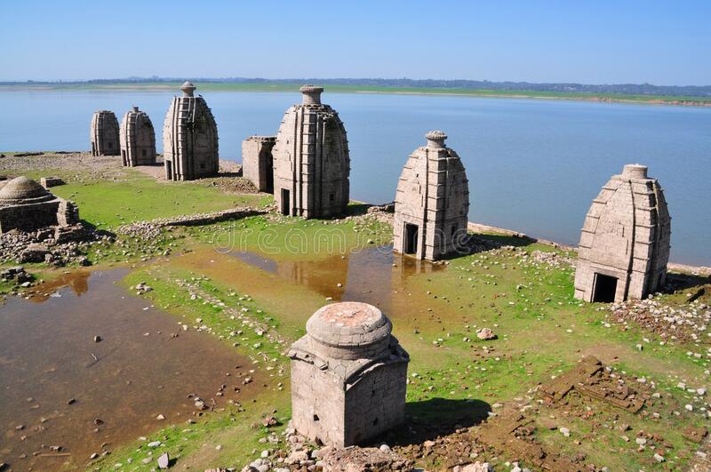
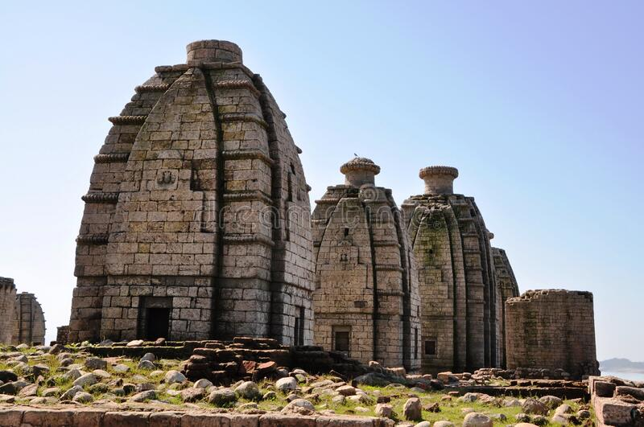
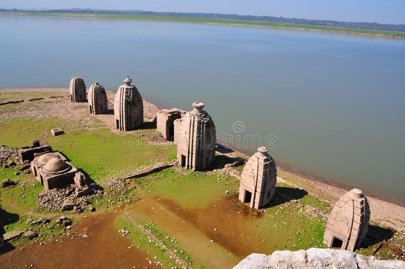
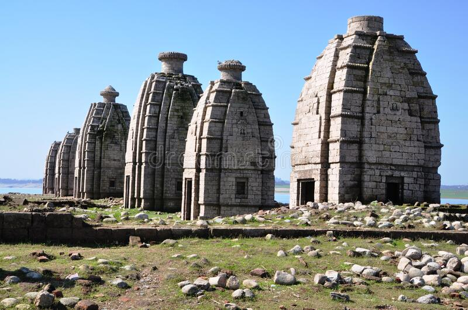

In the state of Himachal Pradesh, there are many temples, but Bathu Temples stand out since they can only be visited from May to June and remain submerged the rest of the year. Confused? Apparently, Bathu temples are known for that. Since they are essentially a group of temples, the temples in the Kangra district are collectively referred to as Bathu ki Ladi.
Using the Pong Dam, a reservoir named Maharaja Pratap Sagar was built in the early 1970s, submerging the entire area. Since that time, these temples are only accessible to the public during the summer because they can only be seen when the water level drops; otherwise, they are submerged the rest of the year.
The First Is Bhagsu Falls, which are surrounded by beautiful vegetation, are a well-known tourist spot that you may visit with your friends and family. These falls' magnificence is just breathtaking. This makes this location extremely unmissable.
Namgyal Monastery, second Particularly for the locals, the Namgyal Monastery holds enormous spiritual value. The fact that the Dalai Lama also resides in this monastery is wonderful to know! There are a tonne of other shrines, temples, book stores, etc. around.
If you consider yourself to be spiritual, you will undoubtedly appreciate the allure and atmosphere of this temple. This temple, which is situated at a height of roughly 1770 metres
The nearest airport to the place is Gaggal Airport is about 8 km from Kangra and 15 km from Dharamshala. It has regular flights to New Delhi with a passanger capacity of 100. After deboarding your flight, you will need to cover the remaining distance by some means of public transportation.
You can take public transport to visit Kangra or you can also take your own vehicle. And to cover the distance between Kangra to Jawali you would be needing to hire a taxi.
The nearest railway station is Jawanwala Shahar. After deboarding at the station, you can cover the remaining distance by some means of public transportation.
   